Turk-barlos shevalari haqida
Turkiy xalqlar qadimdan Markaziy Osiyo tarixida muhim o‘rin tutgan. Ularning etnik tarkibi turli urug‘ va qabilalardan tashkil topgan bo‘lib, har bir urug‘ o‘zini boshqa qabilalardan ajratish maqsadida turk so‘ziga o‘z nomini qo‘shib aytgan. O‘rxun-Enasoy bitiklarida turk so‘zi butun turkiy millatni ifodalagan.
O‘rta asrlarda turklar ko‘p sonli urug‘larga bo‘linganligi sababli, qabila nomini turk so‘ziga qo‘shib aytish ularni farqlashga xizmat qilgan. Shu tariqa “turk-barlos” atamasi shakllangan degan ehtimoliy fikrlar mavjud. Bu atama etnik va shajaraviy mansublikni bildirgan, ya’ni Barloslarning umumiy turkiy ildizdan kelib chiqqanini tasdiqlagan. Shu bilan birga, u siyosiy va ijtimoiy mavqeni ifodalagan, chunki Amir Temur davrida Barloslar davlatning asosiy harbiy tayanchi edi.
Alisher Navoiy Husayn Boyqaro davrini tasvirlar ekan, taxt marosimida qatnashgan elita qabilalar orasida “barlosiy nihod ozodalar”ni alohida faxr bilan tilga oladi. Bu barloslarning XV asr Xuroson siyosiy muhitidagi yuksak mavqeini ko‘rsatadi.
Turk-barlos atamasi o‘rta asrlardagi turklarning siyosiy va shajaraviy ma’nolarning uyg‘unlashgan ko‘rinishidir. Turk so‘zi qadimiy ildizlarga ega bo‘lib, butun turkiy millatni ifodalagan.
Mening tadqiqot obyektim Andijon viloyati Marhamat tumani tarkibidagi Qorabog‘ish, Rohat, Ko‘mirchi, Kalelin, Ilich, Rovot, Buloqboshi tumani tarkibiga kiruvchi Buloqboshi, Shirmonbuloq, Nayman, Uchtepa, Sharq yulduzi, Chaqar, Qo‘rg‘oncha qishloqlari hamda Qirg‘iziston hududiga kiruvchi Aravon tumani Chekobot, Lenin, 8-Birgat, Boyto‘pi, To‘lqin, Oq Machit, Uchko‘prik, Zelyoniy Most, 1-May kabi hududlarni o‘rganishni o‘z ichiga oladi.
Tadqiqot davomida ushbu hududlarda yashovchi aholining katta qismi turk-barlos urug‘iga mansub ekanligi aniqlandi. Shu bilan birga, bu hududlarda o‘zbeklar asosiy qatlamni tashkil etishi bilan bir qatorda tojik, qirg‘iz, rus, tatar va koreys millatlariga mansub aholi vakillari ham yashaydi. Bu xilma-xillik mintaqaning tarixiy rivoji, tili va urf-odatlariga sezilarli ta’sir ko‘rsatgan.
Aholi vakillari o‘z urug‘ nomlarini yaxshi biladilar va ulardan faxrlanadilar. Muloqot jarayonida sayyidlar, eshonlar, qashqarilar, bekto‘pilar, oxunlar, turklar, turk-barloslar, qipchoqlar kabi urug‘ nomlari orqali bir-birlarini tanishtiradilar. Bir urug‘ vakillari o‘zaro yaqin aloqada bo‘lib, ajdodlardan meros bo‘lib kelayotgan marosimlarni davom ettiradilar.
Suhbatlar davomida ko‘plab yoshi ulug‘ insonlar o‘zlarini turk deb bilishlarini va ajdodlari O‘ratepa hududidan kelib joylashganini ta’kidlashdi. Ularning aksariyati o‘z kelib chiqishini turkiy ildizlarga bog‘laydi, biroq barloslar haqida ma’lumotga ega bo‘lganlar nisbatan kam.
Shuningdek, sheva xususiyatlari ham muhim dalil bo‘lib xizmat qiladi. Masalan, ayrim hududlarda “otlar” va “itlar” so‘zlari “oltar” va “iltar” shaklida ishlatilgan. Hozirgi kunda bu shakllar deyarli qo‘llanilmaydi, biroq katta avlod vakillari buni eslab o‘tadilar.
Tadqiqot davomida turk-barlos shevasining ayrim jihatlari Shahrisabz shevasiga o‘xshashligi ham kuzatildi. Bu esa tarixiy va etnik bog‘liqlik mavjudligini ko‘rsatadi.
Shuningdek, sovet davrida pasportlarda millatni “turk” deb yozishga ruxsat berilmagani sababli ko‘pchilik o‘zini “o‘zbek” deb yozdirishga majbur bo‘lgan. Hozirgi kunda esa ayrim hududlarda bu nomni qayta tiklash imkoniyati mavjud.
Dala tadqiqotlari natijasida ayrim hududlardagi turk-barloslar o‘zlarini faqat “turk” deb atashi ularning boshqa turkiy guruhlar bilan qo‘shilib ketganligini ko‘rsatadi.
Ushbu shevani chuqur o‘rganish nafaqat o‘zbek tilining rivojlanishini, balki mintaqaning etnografik va madaniy merosini ham kengroq anglash imkonini beradi.
Alifbo
| № | O‘zbek lotin alifbosi | Yangi o‘zbek transkripsiyasi | An’anaviy o‘zbek transkripsiyasi |
|---|---|---|---|
| 1 | А а | Аа (qattiq) Ää (yumshoq) |
Аа (qattiq) Əə (yumshoq) |
| 2 | B b | B b | Бб |
| 3 | D d | D d | Дд |
| 4 | Е е | Е е | Ээ |
| 5 | F f | F f | Ff (lab-lab) Фф (lab-tish) |
| 6 | G g | G g | Гг |
| 7 | H h | H h | Ҳҳ |
| 8 | I i | I i (yumshoq) Ïï (qattiq) |
И (yumshoq) Ы (qattiq) Ъ (и+ы) Ь (ы qisqasi) |
| 9 | J j | Ǯǯ | дж |
| 10 | K k | K k | Кк |
| 11 | L l | L l | Лл |
| 12 | M m | M m | Мм |
| 13 | N n | N n | Нн |
| 14 | О о | Āā | Оо |
| 15 | P p | P p | Пп |
| 16 | Q q | Q q | Ққ |
| 17 | R r | R r | Рр |
| 18 | S s | S s | Сс |
| 19 | T t | T t | Тт |
| 20 | U u | Uu (qattiq) Üü (yumshoq) |
У (qattiq) Ү (yumshoq) |
| 21 | V v | V v Ww (lab-lab) |
Вв (lab-tish) |
| 22 | X x | X x | Хх |
| 23 | Y y | Jj | Йй |
| 24 | Z z | Z z | Зз |
| 25 | Oʻ oʻ | Oo (qattiq) Öö (yumshoq) |
Oo (qattiq) ƟƟ (yumshoq) |
| 26 | Gʻ gʻ | γ | Ғғ |
| 27 | Sh sh | Šš | Шш |
| 28 | Ch ch | Čč | Чч |
| 29 | ng | ƞ | ң |
Turk-barlos dialekti leksikoni
| Andijon turk-barlos | Adabiy tilda | Transliteratsiya | Misol |
|---|---|---|---|
| arvāq | ozgʻin | arvoq | vāj bālamej narvaγligindan süjelӓriη sӓnӓlӓdi-jӓ. |
| arγamčï\\ïrγïč | sakrash uchun arqon | arg‘amchi\\irg‘ich |
ïrγïčim rāssӓ üzünӓkӓn, sal-pal kesödïm kӓltӓ boppāldï. |
| aγrïndï | xohlamadi | og‘rindi |
uηgӓ ӓϳtsӓm āγrïnïp qïldïda, öziη qïlovir, qïzïm. |
| ajnej | 1. ko‘zgi \\ 2. deraza oynasi | ayney | ajnelärdï artïp poj qïzïm. |
| ӓstijӓm | aslo | astiyam | ӓstijӓm bārgidej ǯājmӓsӓkӓn, rāsa jolï uzaγӓkӓn. |
| ӓǯӓpsӓndӓ | taom turi | ajapsanda |
kečkӓ ӓǯӓpsӓndӓ qïnη, mehmanlar bügün kepqāsa kerej. |
| ӓǯrïq | begona o‘t | ajriq |
hӓmmӓ ǯāϳnï ӓǯrïq bāsïb kettïptï, bār ketmānnï āpčïq tāzӓlӓvālӓϳlïk. |
| āntarïlïš | aγdarilmoq, yiqilmoq | ontarilish |
külip-külip āntarïlïp čüssӓ boladïmï. |
| āqlïq | udum turi | oqliq |
āqlïqqa ālasmi, šunnan ālïƞg, toj qïljätkänlär. |
| ātӓkördï | udum turi | otako‘rdi |
ātäkördigӓ tilvizir āldïj ϳӓηƞgi üϳgӓ čïqïssa išlätär. |
| āxϳāγ | paxta yog‘i | oxyog‘ | vāϳ süjüγ o:qatkä āxϳāγ išlӓtmen, sarϳāγ sālin. |
| āxläš | sakrash | āxlash | arïγdï āxläp ot. |
| āϳbaldaq | doira shaklidagi zirak | oybaldoq |
āϳbaldaγlaris čüšüppāsin, minčӓ čirejlijj, kim äberdi. |
| bäbäčäq | yangi tug‘ilgan qo‘yning bolasi | babachaq | bāqqa hajda bäbäčäγlardï. |
| bӓrgej | to‘gnog‘ich (broshka) | bargej |
bïzi paϳïtta kelinlӓr hӓr-xïl bӓrgeϳlӓrtӓn, köϳlelӓrdi čekkӓsigӓ taxvālardij. |
| baxšï | bashoratchi, davolovchi | baxshi |
baxšï, joqalgän tïllamï ǯājïnï äjttï. |
| baldaγ | zirak turi | baldag‘ | ovsinizi toϳda kördim tïlla baldaγ taqvāpti. |
| bant beriš | poliz ekini pishib bandidan uzilishi | bant berish |
dalani ortasida bittӓ tarvus bant beripti, bāϳa körödïm. |
| bālïš | yostiq | bolish |
pär bālïšlarïmï hämmäsini sintipon bālïškӓ älmäštïrdïm. |
| bop qojïš\\ bolïngän | unashtirmoq | bo‘p qo‘yish\\bo‘lingan |
nilüfӓrdi kelin qïmāxčijdij, bopqoϳïšïptï bilmeϳ qāppïs. |
| botana | loyqa suv | bo‘tana |
botana bosajam paqïrlarda süv apkïrïp poj, ettälӓpkӓčӓ tïnïp pāladï. |
| butïrïš | tugallash | butirish | köjlegim buttïmï? |
| čaγïr | oq va qora arlashgan rang | chag‘ir | otïndï täjïdä čaγïr ilān jātïpti. |
| čaqčaqa\\ čӓk – čӓk | chakchaki | chaqchaqa\\chak-chak |
hӓjitkӓ čaqčaqa qïlamis, ӓsӓl āpčïq qïzïm. |
| čäč | soch | chach | čäčijnï tärävāl. |
| čākmāšinä | tikuv mashinasi | chokmoshina |
čākmāšinezi berïp türiƞ qošni, zebaxāndi tošelärini tikvālej. |
| čirmӓndӓ\\ čildirmӓ | doira(cholg‘u asbobi) | chirmanda\\childirma | ilgärï čirmändä čālïp jār-jār äjtišärdï |
| čilāpčin | qo‘l yuvganda suv tushadigan idish | chilopchin |
mehmānlar kelišïgä čovgin bïlan čilāpčindï āp qoj. |
| čilgi | ertapishar meva | chilgi |
toviγlargä semirsin dïp, čilgi mӓkkӓdӓn köp berämis. |
| čiläš | suyuq massaga tekkizib olish | chilash |
kün ïsïp ketödi ӓkӓm köjlejïnï krӓndeji suvgӓ čilӓvāldi |
| čilixläš | shalabbo bo‘lish | chilixlash | jāmγïrdä čilixlap pāldij |
| čimčiläγič | chumolisimon chaquvchi xasharot | chimchilag‘ich | čimčiläγič qolïmï jāmān čäxti. |
| čïlpïš | ustki qismini uzib olish | čilpish |
xālam hamïrdï čïlpïp-čïlpïp nān jasadi. |
| čïm tāmāq | chimxo‘r | chim tomoq |
sӓntälät hāla kӓsӓl bogӓndӓn kijin, čïm tāmāq bopqāgӓn. |
| čöγal | urishqoq, qo‘pol | cho‘g‘al | buni hämmä ortäγläri čöγal-ej. |
| čükrӓntoj | sunnat toʻy | chukranto‘y |
čükrӓntoϳda mazza qïp nïšālda, āš, šorva ϳedij(bolalar tili) |
| čüviš | titmoq | chuvish | ipti čüvïp tӓšӓdinkü qoj ǯājïgä. |
| četӓnburma | ayyollar libos turi | chetanburma | sepimdä četänburma köjlegim bolardï. |
| danγalčä | sirli idish | dang‘alcha | danγalčägä oqat qüjvāl |
| dahagӓ |
pilla qurtini oxirgi uyquga ketish jarayoni |
dahaga |
dahagӓ qurt bāqqammis, pïllä tergӓmmis, otin täšigӓmis köp menӓt qïgӓmmis. |
| dïnγïrdak | tetik, sog‘lom | ding‘irdak |
hāvātir āmen ammam dïnγïrdej, jügürüb jüripti |
| dumbïl | pishirilgan makkajo‘xori | dumbil |
bārïϳlӓr bāllӓrïm bāγdӓn dumbïl terïb kelïϳlӓr pïšïrïb berӓmӓn. |
| düsӓmbӓ | me’yoridan ortiq ustma-ust qo‘yish | dusamba |
mïnčӓ düsӓbӓ qïlïb āpkeldïη tӓšӓ, belïη ārïpālӓdï. |
| dolābï | sifatsiz meva yoki sabzavot | do‘lobi | sātïškä dolābi sözilardi sāma. |
| döltä | saryog‘ quyqasi | do‘lta | ettӓlӓp čājgӓ döltӓ bār. |
| erčïš | ergashish | erchish |
men üjdän čiqjatkänimi nevärälӓrim körsӓ erčïjdï. |
| ešmä | tannoz | eshma |
rӓsl ӓkӓni qïzïnï kördïm, ešïlïp töϳgӓ ketϳӓtkӓnӓkӓn. |
| gäǯïr | qaysar, o‘jar | gajir | minčӓ gӓǯïrsӓn, āl digӓndӓ, ālövrsenči. |
| giǯmӓn | taom nomi | gijman | issïγ nānnan āpke gijmӓn qïlamis. |
| gopi | qurt pilla oʻraganda ikki qurt bir uyaga kirib olishi | go‘pi | pïllӓnï gopïlӓrïnï ӓlāhïdӓ qïlïjlӓr. |
| γanaš | bargsiz novda | g‘anash | qurtlardï γanap čïq. |
| γӓϳnālï\\ | olxo‘ri | g‘aynoli\\ |
enӓmi bāγida γaϳnālïsï bār, dājim terïp ϳiϳmis. |
| köksültān | ko‘ksulton | ||
| halïnčälek\\hančälek | halunchak | halinchalek\\hanchalaek | hänchälej jäsäberiƞ ükäm mlan üčämïs |
| hӓlpišlä | shoshilish | halpishla | hӓlpišlӓp qaqa ketϳӓpsӓn. |
| hülvä | yalpizning turi | hulva |
bār qïzïm, zovïrdi(katta ariq) boϳideji hulvadӓn bir pelӓ(payola) terip ke, o:qatkä qošamis. |
| istӓš | izlash | istash |
eϳ hӓmmӓ ǯāϳdï istӓp tāpalmadïm, qaqa ϳoqaldiϳkin-e. |
| järmä |
1. ayollar sochini ikki bo‘lib o‘rib olganda soch
o‘rtasidagi farq. 2. bug‘doydan tayyorlangan sutli taom |
yarma |
taraγ āpke järmä āčïp čäčijni orïp pojaman. |
| jātqїzïš | bolalarni sunnat qilish | yotqizish |
ükӓmi ϳātqïzdïj endi bemalal xoras sojsa boladi. |
| jäkändāz\\töše | ko‘rpacha | yakandoz\\to‘she |
bïzdä ϳäkändāzdi uč metr qïp tikӓdi, tāškendä tor metr qïp tikädikän. |
| jāviš | non yopish | yovish |
tandirgӓ nān ϳāvgӓmmisis hidi kelϳӓpti |
| joqlov | tashrif buyurish | yo‘qlov |
ǯïǯïnï(chaqaloq) ϳoqlap kiripöjelij čïllasi čïqïptï. |
| jüzāštï | udum turi | yuzoshti | jüzāštïgӓ kemӓdis, tinčlijmi. |
| käsirmāč |
tandirda yopishib qolgan nonning orqa qismi |
kasirmoch |
apa tandïrdan nāndï käsirmāčini āberiƞ |
| kävärteϳ | tok osh | kavartey |
har jïl üzümdi bӓkidӓn qïškӓ ϳāpïp qoϳaman, bāllarim kӓvӓrtej ϳӓxši körӓdi. |
| kӓlliglӓš | kallaklash | kalliglash |
tutlardï kӓlliglӓp, tut šāxlarïnï qürtka( pilla qurti) salamïz. |
| kälpätir | non turi | kalpatir |
sujuγ o:qat qïlϳatu:dïm, dӓrröv kӓlpӓtirӓm qïvareϳ bāllar ϳaxši körïp ϳiϳdi |
| kӓmzïr\\kӓmzïl | nimcha | kamzir\\kamzil |
qāra bahmaldan tikibergӓn kӓmzïlijzi hӓlijäm kijjäppän. |
| käzänotïj | rezina etik | kazano‘tiy |
käzänotigimi äpkeči, ettӓlӓp bāqqa suv qoϳodim, bir čiqip suvdan xavar āp kelejčij. |
| kepӓtӓ | tashqi ko‘rinish (salbiy ma’noda) | kepata |
bar kepӓteϳni tuzӓt, öziηgӓ ϳӓrӓšӓdigӓn išti qïseηči |
| keskänāš | taom | keskanosh | kelinimgӓ keskӓnāš qïlïštï örgӓttim. |
| kömäriš | to‘nkarish | ko‘marish |
köčadӓn tāšbӓqӓ tāffaludïm, qāčïp ketmӓsin dïp üϳgӓ äpkirip, üstigӓ ǯāmčanï kömӓrïp qoϳsӓmӓm bӓribir qāčïketipti. |
| körpӓqovdï | udum turi | ko‘rpaqo‘vdi |
mädi:näni körpäqovdïsïda pičä paxta ϳetmeϳ qālodï, bāzargӓ tušïp keldïj. |
| kösej | paxtaning g‘unchasi | ko‘sey | äjä mālgӓ beriškä kösej terïp keldij |
| köstikān\\temïrtikān | tikonli begona o‘t | ko‘stikon\\temirtikon |
kös tejmӓsin dïp, ešijtӓn kiroriškӓ kösttikān āsïp pojdij. |
| küvӓ |
sutdan qaymoq ajratuvchi slindir shaklidagi tunika asbob |
kuva |
sütti küvӓ qïlodïm ӓnčӓginӓ sarjāγ čixtï. |
| lapaγ | semiz | lapag‘ | lapaγlanïp bir iškӓ jӓrӓmej qāptï. |
| lӓpӓčӓk\\lepӓr | bolalar o‘yini | lapachak\\lepar | mahallada röšӓn eng zor läpäčej tepӓdi. |
| lāčïra | non turi | lochira | lāčïragä pïjāz bïlӓn jïzzӓ sāvārdïm. |
| loγït | lahm go‘sht | lo‘g‘it | göšti loγït ǯājïdan āldïm. |
| lüq | o‘simlikda kechadigan jarayon | luq | ekkän güllärïm lüq bop bak jāzdï. |
| mӓskӓϳāγ | kuvadan olingan yog‘ | maskayog‘ |
hāzir qajmaγ, sarjāγ išlӓtӓmis, ilgärï küvӓdä mӓskӓjāγ ālārdij. |
| mӓzӓr | qudalarni oldi berdilari | mazar |
mӓzӓr ǯönätϳätkӓnïmïstӓ keseƞ qarašvarasan. |
| mäǯik | pakana | majik |
jäxši ϳe, mӓǯij bopālasan, boϳïnam ösmejdi. |
| märdej | doni olingan makkajo‘xori, so‘ta | mardey | märdejlardi āpke očaqqa išlatamïs. |
| mӓ:lim | o‘qituvchi | ma’lim |
sӓttārdi oγlï bāllärgӓ mӓ:limliϳ qïlϳäptikӓn. |
| miǯiläš | ezgʻiladi | mijilash |
nāndï xamïrïnï qanča köp miǯilaseƞ, nanïƞ šunčä šïrïn boladï. |
| muγdašïš | dildan suhbatlashish | mug‘dashish |
dügӓnӓm mӓn taηgäčä muγdašïp otïrdij. rāsa gӓplӓrïmïz jïγïlgӓn äkӓn. |
| mölčӓq\\mölčaγ | munchoq | mo‘lchaq\\mo‘lchag‘ |
jӓƞgi kelinligimdä qïzïl, āq mölčäγïmiz bolardi. |
| nӓkӓs | qizgʻanchiq | nakas |
nӓkӓs ӓkӓnsӓn, seminän oϳnamïman, bittӓϳäm ončaγïjnï bermädiƞ(bolalar tili). |
| nāmbaraγ | taom turi | nombarag‘ |
qajnam suttï jāγïnï toplap nāmbaraγ qïladi. |
| nānsïndïrdï | udum turi | nonsindirdi |
qündüzāpӓ qïzïnï boptï šüngӓ bügün nānsïndïrdïjkän.. |
| nes | hayron qolmoq | nes | ātasïnï gäpini eštip nes bopāldi. |
| opkä | maxsus taom | o‘pka | dädäsi opkägä jāγlij sut āliƞg. |
| oγnaš | to‘gʻirlash, tuzatish | o‘g‘nash |
sepӓrӓtïr sut bilӓn qӓϳmӓγdi ӓrӓlӓštirϳӓptï, oγna beriη. |
| parï\\lӓnkӓ | bolalar o‘yini | pari\\lanka |
mahallada müxabat en zör parï tepӓdï. |
| pïlampājӓ | zinapoya | pilampoya |
mäjtäptä rāssa pïlampāϳa köpäkӓn, ϳïqïlïp čüšmäsin dïp ükӓmi qolïdan üšӓp ϳurdïm. |
| pešdӓsxān |
mehmonlarga non va shirinliklardan solib berish |
peshdasxon |
bolïƞ, pešdӓsxān äpkirdizmi, ānez āpkegän pïšïrïγla:danam sālin. |
| pütӓš |
daraxt shoxlarini kesish, tartibga keltirish |
putash |
bügün kečkӓčӓ bāγdejï šaptalïlardï pütädim-da. |
| postïrma |
go‘shti va teri orasidagi shilimshiq qatlam |
po‘stirma | enäm dajim āškä postïrmali göš sāladi. |
| qaqaš | tiqilib qolmoq(suyuqlikka) | qaqash | qaqap ketti suv ber ötïp ketӓdi. |
| qaqïrmačej | qirmoch | qaqirmachey |
qaqïrmačejini bāšqa idiškӓ saldïm, kimi ϳegisi kesa āpkeberӓmӓn. |
| qarïšqï | chiϳaboʻri | qarishqi |
qoϳxānani ešigini ϳäxšilap ϳāp, kečӓsi qarïšqï kemäsin. |
| qančačalāq | tetepoyalik tadbiri | qanchachaloq |
qančačalāq qïlamïs, bār, jāš ballardï čaqïrïp ke. |
| qantegörij | o‘rik turi | qantego‘riy | qantegörijtӓn qāqi sāldij |
| qapaq sāmsa | somsaning bir turi | qapaq somsa |
qapaq sāmsadan ikitӓ jeüvdïm, küni mlan tox jürdim. |
| qaϳšiāš | xamirli ovqat | qayshiosh |
äpäm qïgän qajšiāšti tamï xalïjam esimdӓ. |
| qa:da | udum turi | qada |
kӓrimӓxān ānasigӓ qa:da qïljaptijkän ӓbettä čïqïp kelӓmis. |
| qïltïrïq |
1. baliq qiltanog‘i 2. ozg‘in. |
qiltiriq | sijnim qïltïrïq mengä oxšap töläčämäs. |
| qurtāp | qurut | qurtop |
jāzda qurtāp qïp tāmga ϳāϳsej zör bop qurïϳdï. |
| qurtava | ezilgan qurt | qurtava |
jāzdï künida, qurtava ičseη ǯāndï rāhatï-da. |
| sӓkӓlӓk\\öxlö | juva | sakalak\\o‘xlo‘ |
xamïrgӓ sӓkӓlejdi qattïγ bāsma, ϳāpïšïp pāladi |
| sӓbӓčkӓgül | gul nomi | sabachkagul |
ӓgӓrötgӓ hӓr-xïl sӓbӓčkägüldän ekӓndïm, qïšgӓčӓ türdï. |
| sӓjiš | sanchmoq | sayish |
turγun māma kinnӓ silӓgӓn pïčaγïnï jergӓ sӓjip pojdi. |
| sāqït | taom | sāqit | sāqïttï xamïrïnï qïlïškä ӓmmӓm duvā āgän. |
| sijdäm | silliq mato | siydam |
kelinligimta sijdäm köjlelarim bolardi. |
| sürpaāšti | udum turi | surpaoshti |
qïzïmï bergänimta, sürpäāštïda äpäm hämmägӓ fӓrtuj tïkïp kelö:di. |
| sultap | sutli taomlardan biri | sultap |
ettäläpläri apam sultap qiberärdi, kuni mlan toq jurärdij. |
| sutartïš | sutni qaymog‘idan ajratish | sutartish |
men sutartïp keleϳ, ükӓlӓriƞgӓ qarap tur |
| süqiš | tiqish | suqish |
köčӓtlӓrgӓ tӓϳӓq suqïp bӓϳlӓp poϳseƞ ϳïqïlïp tüšmejdi. |
| sozma | chalpak | so‘zma |
bajramlada sozma qïp jaš bāllargӓ tarqatamïs |
| sövingül | yovvoyi o‘t | so‘vingul |
sövingüldi bӓgidӓn ālïp, qolïnƞgӓ suv bïlan išqalasen rāssa köpirӓdi. |
| sözӓšti | sabzi to‘g‘rar | so‘zashti |
äjäsi, šarxān pïčaγïmï āberiƞ sözӓštigä ketjappan. |
| sözäjnek | ninachi | so‘zaynek | äriγdi bojidan sözäjnej ušavāldij. |
| spärej orij | o‘rik turi | sparey o‘riy |
späre orijdan terïp ket bālam, qiϳām qivālasan. |
| šäläγorij | o‘rik turi | shalag‘o‘riy |
šäläγorijdan qāqi qïma, ϳäxši bomeϳdi, qurigӓntӓ posti qāladi. |
| šӓmej | begona o‘t | shamey |
pamildārini ārasini šӓmeϳ bāsïp ketïptï kečӓ suv qoϳodim, bügün tāzalavāldïm. |
| šӓtir | birdan | shatir |
vāj, sӓl šāšma, minčӓ šatïr-šutïr qilasan. |
| šildiηläš | yupun kiyinish | shildinglash | üstiηgӓ binnӓsӓ kiϳ šildiηlӓmӓstӓn. |
| šimӓdӓlӓš | shimarmoq | shimadalash | šïmïnï šimädälap lāϳ tepϳaptï. |
| tarvāq | eshakemi | tarvoq | sovïqqa čiqödim, tarvāq tāšïp ketti. |
| tamšanïš | chaynash, ovqatlanish | tamshanish | tamšanïb otïrïppan. |
| tājtāj | tetapoya | toy-toy |
qani tāϳtāϳ-tāϳtāϳ ӓnӓ kӓttӓ bāla bopsiz, endi qaqačačalaq qïlamïz-ӓ o:lïm. |
| täräxläš | epchil | taraxlash |
kelïnïm täräxlägän. ā:zïnï ačïp otïrmejdi. |
| tālgül | xonaki gul | tolgul |
tālgüldi quϳāškӓ qoϳsam püšti güli āqarïp ketipti. |
| tek | jim | tek | tek, dӓdeη uxlaϳaptï, oϳγatvārasan. |
| teq qoj | aralashma, tegma | teq qo‘y |
tek qoj, ӓrӓlӓšmӓ bӓribir bilgӓnini qiladi. |
| teηgtüš | tengdosh | tengtush |
baϳegi qïz sem bilӓn teηtüšmi, epčilgineϳkӓn. |
| tupaāš | hamirli suyuq taom | tupaosh | tupaašti xamïrïnï jüpqa jājiš kerej. |
| torpaq | buzoqcha | to‘rpaq |
torpaqqa qarap tur, üzäqqa ketip qāmasin. |
| toptāš | qizlar oʻyini | to‘ptosh | hāzïrgi bāllar toptāš oϳnäšti bïlmejdi. |
| usvariš | suzong‘ich | usvorish | māldi jānigӓ bārma usvarmasïn. |
| učï | udum turi | uchi |
sābïrdï ānasïnï učijkän, etӓlӓpttӓ otïp poϳejlij üϳӓt bomasïn täγïn. |
| uzïqāra | urishqoq | uziqora |
ӓkmӓldi ö:γlï rāssӓ uzïqāra boptï, köčӓdӓn ötkäƞƞä tāš ātjapti. |
| xunān\\örӓmӓ | xonim | xunon\\o‘rama |
xunāngӓ qaϳmax sāmaseƞ ϳäxši bomeϳdi-da, ǯiččӓ kütip tür qaϳmax tārtaman. |
| zanƞg-zaƞg | chak-chakning bir turi | zang-zang | mexmāntāvāqqa zanƞg-zaƞg qïvāldïm. |
| zinγïllaš | tez chopmoq | zing‘illash |
bār bālam, zinγïllap dökängӓ tüšip kegin. |
| züptürüm | begona o‘t | zupturum |
qoliƞ küϳdimi, züptürümdi bӓkidӓn ālïp qoϳvāl. |
| ǯiǯi | chaqaloq | jiji | ǯiǯigä bešij ābārämïs |
| ǯiǯiläš | tug‘ish | jijilash | kelïnïmïz ǯiǯiläptï, körip kelej |
| ǯičä | ozgina, kam | jicha | ǯičä kütip türin, kepqālädï |
| ǯïq | to‘la, lim-lim | jiq | sömkejnï ǯïq toldïrïp kepsändä. |
| ǯüvӓrï šorva | taom | juvari sho‘rva |
qizlar kelišigӓ jüvari šorva sāp qojdim, qajnap jātadi |
| ǯelej | paranji turi | jeley |
jӓηgi kelïn köčӓgӓ čïqqanda ǯelejdï ϳāpïnvāsa ϳäxši bolädi. |
DEVONU LUG‘OTIT TURK BILAN ANDIJON TURK-BARLOSLARI SHEVASINING QIYOSI
Quyida keltirilgan jadvalda 1961-yilda S.M.Mutallibov tomonidan nashrga tayyorlangan, M.Koshg‘ariyning “Devonu lug‘otit turk” nomli asaridagi so‘zlar Andijon turk-barlos shevasidagi so‘zlar bilan qiyoslandi. Jadvalda, Devonu lug‘otit turk-DLT shaklida berildi.
| Andijon turk-barlos | Izoh | DLT da | Adabiy tilda |
|---|---|---|---|
| em | shifo | эм | davo |
| esh qoʻsh | sherik | эш | hamroh, oʻrtoq |
| oγ | ayollar ishtoning qismi | оғ | chodirning yuqori qismidagi yog‘ochlar |
| un | ovoz | ўн | un, tovush |
| ona, onash | qizlarni erkalash | анач | erkalash |
| ïlïγ | ïлïғ | iliq | |
| očaγ | oʻchoq | очақ | oʻchoq |
| aγaq | oyoq | азақ, ajaқ | oyoq |
| arvaq | ozg‘in | арïқ | oriq |
| uzaq | uzoq | узақ | uzoq |
| ökil atä | tutingan ota | öкil | koʻp |
| ät | ism | a:t | ism, ot |
| äčä | opa | ача | opa |
| ärä | ora | ара | orasi |
| ulaγ | yamoq | улағ | yamoq |
| ögrä | oʻgra ovqat | ўгрä | oʻgra ovqat |
| arqa | orqa | арқа | orqa |
| alqïndï | sovun qoldig‘i | ақïндï | oqar suv |
| ešilgan | olifta | ӭшilгäн | surilib turadigan |
| öčäšdi | oʻchakishdi | öчäшдi | oʻchakishdi |
| ïšändi | ishondi | iшäндi | ishondi |
| ašindi | oʻzidan ortirdi | ашундï | oshdi, oʻzdi |
| ïstattïm | izladim | iстäттiм | izlatdim |
| süqdim | kuch bilan kiritmoq | суқдум | kiritmoq |
| örmänčij | o‘rgumchak | öрўмчӓк | o‘rgumchak |
| ördej | o‘rdak | öрдäк | o‘rdak |
| činčälāq | jimjiloq | jïjaлaқ | jimjiloq |
Quyida keltirilgan jadvalda Bo‘ri Xasanovning 1980 yilda yozilgan “Исследования узбекских говоров типа турк-барлас” nomli nomzodlik dissertatsiyasida keltirilgan boshqa shevalarda uchramaydigan so‘zlar jadvalini andijon turk-barlos shevasiga qiyosladik.
| Turk-barlos(B.Xasanov) | Andijon turk-barlos | Adabiy til |
|---|---|---|
| тӓйпↄлↄс | čäƞg | tegirmon toshi atrofidagi chang |
| чызиллↄғ | saqalaladïgan | elektrobritva |
| сорӓгич | tergövči | tergovchi |
| жувↄп бергич | südlänüvči | sudlanuvchi |
| чӓҳӓл | xassa | qoʻltiqtayoq |
| xↄриш | bir biriga | |
| бӓқалӓ пӓмӓдↄри пӓмидър | pämidör, pamïldarï | pomidor |
| чучуг | šäkär | shakar |
| сӓргӓлӓк | jupqa xalat | yozgi xalat |
| иттиг | nardan, ačïγ | nordon |
| нↄпӓрмои | sijareƞg | siyohrang |
| тишқↄли | bardovïj | bardoviy |
| дусↄғ қой | ikki yoshli qoʻy | |
| чↄри пӓнжи қой(тӓкӓ) | toʻrt yoshli qoʻy | |
| туппӓ\\туппӓ эш\\лӓхша | tuppa | hamirli ovqat |
| ↄвↄ\\ↄвӓ | ↄвӓ, ämäki | amaki |
| қариндↄш | qarïndaš | ona tomon qarindosh |
| хеш | qarïndaš | ota tomon qarindosh |
3. Vodiy va vohda yashovchi turk-barlos shevalarining qiyosi
Vodiy va vohda shevalari farqlari.
Quyida keltirilgan jadvalda bizning tadqiqot obyektimiz bo‘lgan Andijon viloyatining Marhamat, Buloqboshi va Qirg‘izistonning Aravon tumanlari turk-barlos shevasi, Bo‘ri Xasanovning 1980 yilda yozilgan “Исследования узбекских говоров типа турк-барлас” nomli nomzodlik dissertatsiyasida tadqiqot obyekti bo‘lgan Samarqand viloyati Urgut tumani Tersak qishlog‘i, Tojikistonning Pnjikent tumani Sudjin qishlog‘i, Qashqadaryo viloyati Kitob tumani Tashkalak qishlog‘i shevalari qiyoslandi.
| Tersak qishlog‘i | Sudjin qishlog‘i | Tashkalak qishlog‘i | Andijon turk-barlos shevasi | Adabiy tilda |
|---|---|---|---|---|
| чↄвич | чↄвич | чↄвич | čömič | choʻmich |
| тухча | qozïčaq | qoʻzichoq | ||
| дусↄғ\\тусↄғ | дусоғ | дусоғ\\тусоғ | qoj | ikki yoshli qoʻy |
| кↄвↄг | ковог | кӓвог | kavek | чуқурча |
| тиннↄғ\\тирнↄғ | тиннↄғ\\тирнↄғ | тиннↄғ | tïnnaγ | tirnog‘ |
| сери | сори | сери | sökče | uzum shoxlarini tutib turgich, krovat |
| сӓвачиғ | сӓвачиғ | сӓвачиғ | sävaγič, säväčöp | |
| постӓг | постӓг | постӓг | qoʻy terisi | |
| тӓннов\\тӓрнов | тӓннов\\тӓрнов | тӓннов | tärnöv | tarnov |
| сӓвӓт | сӓвӓт | сӓвӓт | sevät | savat |
| ↄптↄвↄ | ↄптↄвӓ | ↄптↄвӓ | suv idish | |
| йↄғлↄғы | йↄғлↄғы | йↄғлↄғы | skvarotka | tova |
| нↄрвↄн | нↄрвↄн | нӓрвↄн | šatï | narvon |
| инӓг\\сийир | инӓг | инӓг | mal | sigir |
| бозӓг | бозӓг | бузↄв | bözek(g) | buzoq |
| змↄриғ | зӓмↄриғ | зӓмↄриғ | qozïqarïn | qoʻziqorin |
| чумчуғ | чумчуғ | чумчуғ | čïmčïγ | chumchhug‘ |
| қаллирғↄч | қаллирғↄч | қарлиғↄч | qaldïrγač | qaldirg‘och |
| зↄв | ora | jar, handaq, chuqur | ||
| ӓнньмↄғ ӓндьмↄғ | ӓнньмↄғ ӓндьмↄғ | ӓнньмↄғ ӓндьмↄғ | яширинча кузатиш | |
| җↄннↄр\\бори | қапишқи | borï\\qarïšqï | boʻri | |
| туршак | ғолун | туршак\\ | ||
| зↄрдↄлиқↄқ | örik | oʻrik | ||
| чӓмич | қўзиқорин | чӓмгуч | qozïqarïn | қўзиқорин |
| ↄптↄвↄ\\чӓйдиш | ↄптↄвↄ | қумғон\\ | ||
| чӓйдиш | qumγan\\čövgin | қумғон | ||
| пӓтнис | бӓкӓш | лӓгӓн | patnis | |
| лӓйлича | тӓхсимча | ликↄпча | tärelkä\\likapčä | likopcha |
| бостимӓқ | ғарӓм | искирт | bastïrma\\γaram | pichan uyimi |
| вӓйиш | вӓлӓң | вӓлӓң | sökče | uzu novdalarini ushlab turuvchi |
| ғӓзӓ | теппӓ | ғӓзӓ | Tepalïγ\\bälät | tepalik |
| ↄлвↄли | ↄлвↄли | ↄлвↄли | ačïγ gïlas | gilos |
| котӓл | pereval | pereval | ||
| қьрриғ | қьрриғ | қьрриғ | qopäl | qoʻpol |
| бↄшуғ | бↄшуғ | бↄшуғ | äčigän qatïγ | nordon qatiq(bosh yuvish uchun) |
| җувↄнӓ | buqa 2,4 yosh | |||
| кӓшкӓшӓк | čözmä | choʻzma | ||
| җилоп | pajpaγ | paypoq | ||
| йергӓнӓк | Rišötkä\\temïr setkä | panjara | ||
| ғьлвинни\\ғьлминни | hamirni yoyib, ichiga shaker va tvorog solib qoviriladi. | |||
| ӓңңↄр | ängär | hosil yig‘ib olingan dala | ||
| ӓлӓғдӓ | behalovat | |||
| бағриқмↄқ | boγïlïš | boʻg‘ilmoq | ||
| бↄжӓ | baǯä | boja | ||
| бↄшвↄғ\\бↄшвↄқ | arqan | hayvonlarni boʻyinini bog‘lashga arqon | ||
| бозак | бзӓк\\бузↄқ | бозак | bözek | buzoq |
| ботӓна | bötänä | |||
| йӓңңӓ | йӓңңӓ | йӓңңӓ | kennäjä | akaning hotini |
| җӓпчи | җӓпчи | җӓпчи | söči | sovchi |
| пↄччӓ\\йӓзнӓ | пↄччӓ\\йӓзнӓ | пↄччӓ\\йӓзнӓ | paččä, opa yoki singilning eri | |
| ушↄғ\\увоғ | ушↄғ\\увоғ | ушↄғ\увоғ | ušäq\\uvaγ | non ushog‘i |
4. Marhamat, Buloqboshi va Aravon turk-barlos shevalarining qiyosi
| ADABIY TILDA | MARHAMAT | BULOQBOSHI | ARAVON |
|---|---|---|---|
| sovun qoldig‘i | ālqïndï | yäländï | alqïndï |
| arqon | arqan | ip, arγamči | arqan |
| ozg‘in | ärvaq | arvaq | čillašïr\\arvaq |
| yaylov | ängär | - | ängär |
| talamon | ängär | tälämān | ängär |
| ora | ärä | āra | ärä |
| oftob | āptö | āftā | āpto |
| amaki | āвӓ, ämäki | ämäki\\büvä | āva |
| chala pishgan o‘rik | hom | ālatāp | hom |
| boraveringlar | bārišövir | bārïp ke | bārišövir |
| molxona | bastïrma | näves | bastïrma |
| loyqa | botana | läjqä | lājqa |
| qo‘lqop | pïrčätkä\\biyalek | bijälä | bijälä |
| sochiq | čäčiγ | čäčiγ | sāčïγ |
| doira | čïrmӓndӓ\\čïldïrmӓ | dombïra | čïrmӓndӓ\\čïldïrmӓ |
| tugish | tugïš | čigiš | tugïš |
| chimxo‘r | čïm tāmāq | čïn tāmāq | čïm tāmāq \\qïltanāq |
| urishqoq | čoγal | uzqärä | čoγal |
| chumoli | čumälij | qumirsqa | čumālïj |
| beshik yopinchi‘i | gāvräpoš | gävärä | jāpqïč |
| o‘qtalish | doläjïš | göläjiš | goläjïš |
| samiz | lapaγ | längillägän | lapangläp |
| lahm | loγït | lahm | loγït |
| betoqat bo‘lish | betoqat bo‘lish | ilärïš | betoqat bo‘lish |
| yaraning suvlanishi | ilviräš | ilǯiräš | ilviräš |
| izlash | ïstӓš | ïstäš | izläš |
| kelaver | kelö:vir | kelāvr | kelö:vir |
| mo‘ylov | möjlöv | möjlā | möjlöv |
| saryog‘ | mӓskӓϳāγ | sarjāγ | kuvajāγ |
| musicha | mïsïlčä | miččä | mïsïlčä |
| ezg‘ilash | mïǯïqläš | γïǯïmläš | mïǯïqläš |
| govmijja | nijnačuq | ninälāγič | nijnačuq |
| parï\\lӓnkӓ | par | lӓnkӓ | |
| daraxtni shoxlatish | parγama | parxama | parγama |
| achitqisiz qozon noni | qatïrma | poškäl | qatïrma |
| ekish | süqïš | ekiš | suqïš |
| sovchi | söči | sāvči | sövči |
| so‘ri | sökče | sokčäj | sökčej |
| ninachi | sözäjnej | ātaǯüvänäk | sözäjnej |
| chalpak | sozma | čozma | čozma |
| eshik tambasi | ešij tamba | taqa | qulp |
| urinchoq | epčil | tutïmsaγ | epčil |
| tirnoq | tïnnaγ | tïndäq | tïndaγ |
| buzoqcha | toqala | bözäk | toqa |
1. Qayerdan ko‘chib kelganingiz va qaysi urug‘ga mansub ekanligingiz haqida bilasizmi?
Hududiy axborot va video.
2. Turk-barloslarni boshqa urug‘ vakillaridan qanday ajratib olasiz?
Hududiy axborot va video.
3. Ajdodlaringiz qanday mehnat bilan shug‘ullangan.
Hududiy axborot va video.
Marhamat tuman
Hududiy axborot va video.
Video tanlang
Buloqboshi tuman
Hududiy axborot va video.
Video tanlang
Aravon tuman
Hududiy axborot va video.
Video tanlang
Axborotchilar
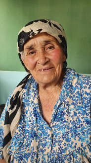
To‘xtasinova Qiymatxon
Mar. Qorabog‘ish qishlogʻi, Kalxozchi, 84 yosh(qashqari)
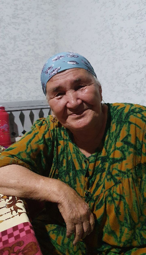
Boltaboyeva Kimsanxon
Mar. Ko‘mirchi ko‘cha, 78 yosh(turk)
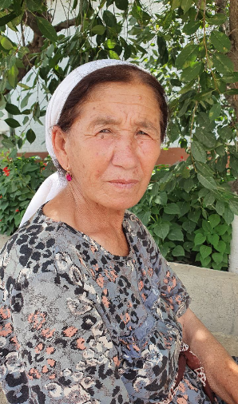
Mansurova Karomat
Kalxozchi, Mar. Qorabog‘ish qishlogʻi,64 yosh(turk)
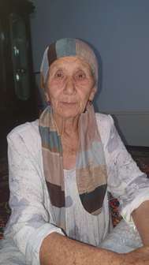
Santalat hola
72 yosh
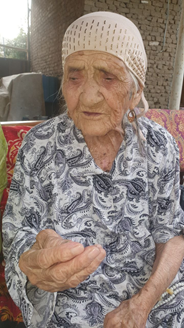
Oynisa hola
uy bekasi, Mar. Qorabog‘ish qishlogʻi, 90 yosh (turk+tojik)
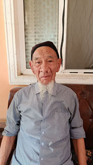
Ahmadaliyev Muhtor
O‘qituvchi, Ara. Lenin mahalla, 84 yosh(turk)
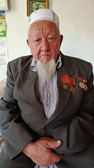
Abduqayumov Turdali
O‘qituvchi, Ara. Boyto‘pi, 80yosh (turk+qirg‘iz)
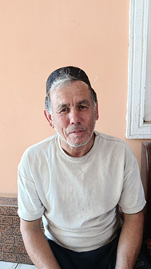
Shukurullo
shafyor, Aravon, 55 yosh(turk)
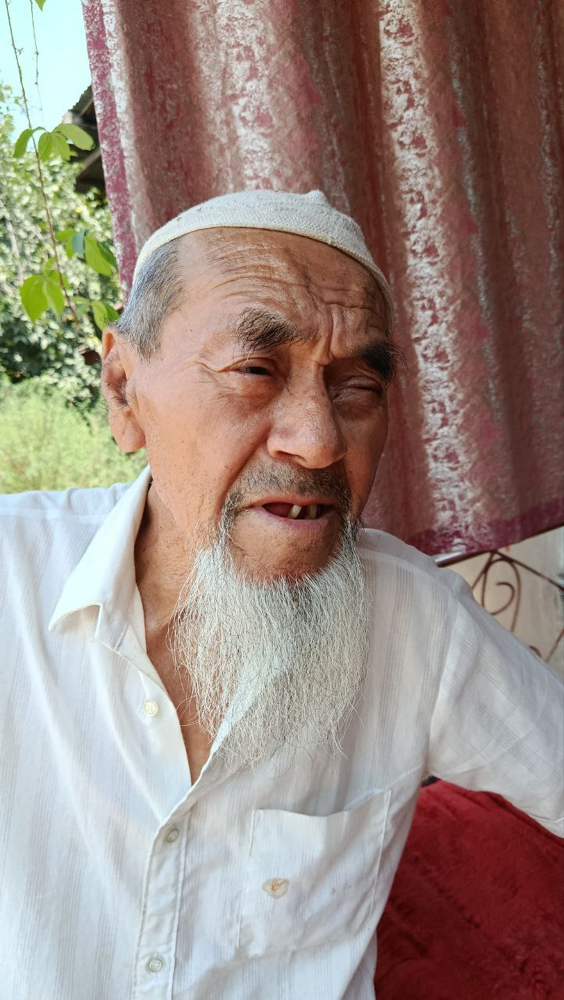
Eshqo‘ziyev Ergashali
O‘qituvchi, Ara. Turkmahalla, 87 yosh (turk-barlos)
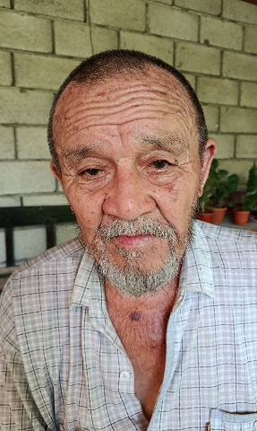
Ermuhammedov Hudoyberdi
ishchi, Ara. Turkmahalla, 85 yosh(turk-barlos)
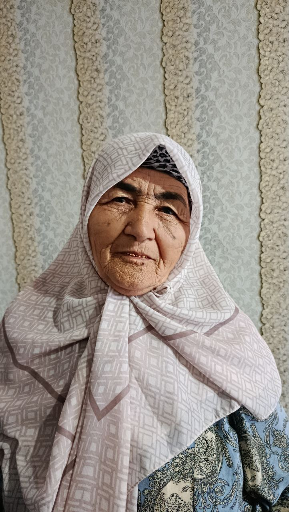
Anarbayeva Halima
Kalxozchi, Ara. Boyto‘pi mahalla, 76 yosh(turk)
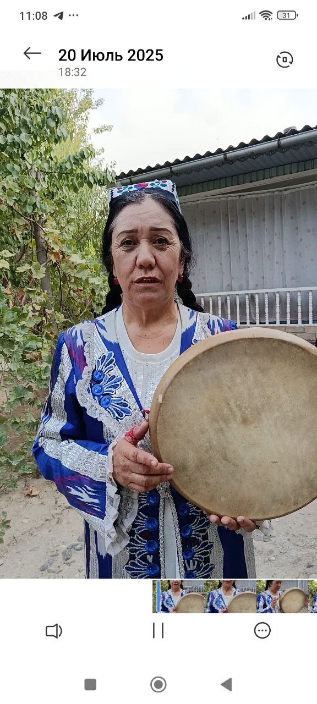
Hamdamova Momoxon
Laparchi, Ara. Chekobot qishlogʻi, 63 yosh(turk)
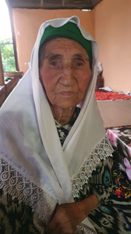
Hudoyberdiyeva Oyimqiz
, Mar. Rohat qish, 95 yosh(turk)
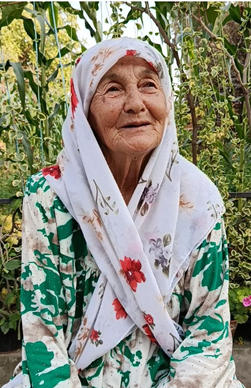
Ahmadaliyeva Santalatxon
Kolxozchi, Mar. Qorabog‘ish qishlogʻi, 75 yosh(turk)
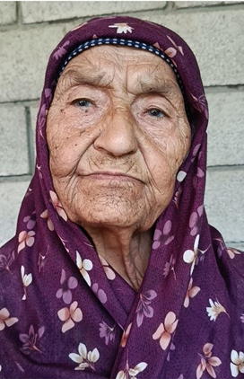
Ermuhammedova Adolatxon
Kolxozchi, Ara. Turkmahalla 84 yosh(turk)
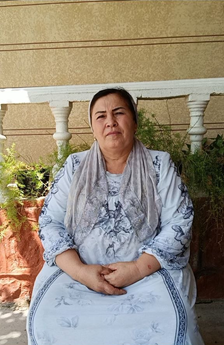
Yo‘ldasheva Shoistaxon
O‘qituvchi, Mar. Kelelin qishlogʻi, 53 yosh(qashqari oxun)
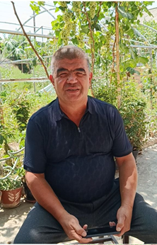
Umarov Murodiljon
Hisobchi, Mar. Rohat qishlogʻi, 63 yosh(qashqari oxun)
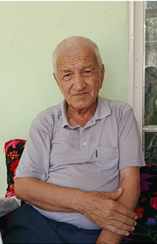
Haydarov Ismoil
Ishchi, Bul. Shirmonbuloq qishlogʻi, 74 yosh(turk)
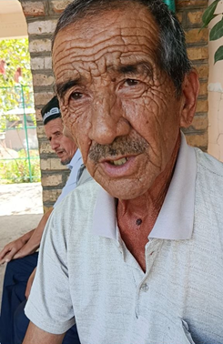
Orziyev Mahamadvali
O‘qituvchi, Bul. Shirmonbuloq, 70 yosh(turk)
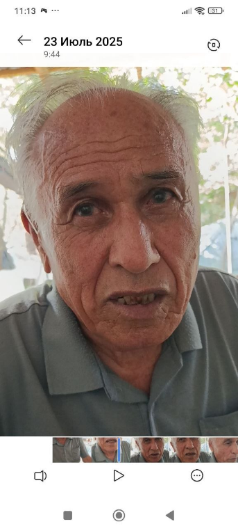
Qorayev Ashirali
aloqachi, Bul. Shirmonbuloq, 87 yosh (turk)
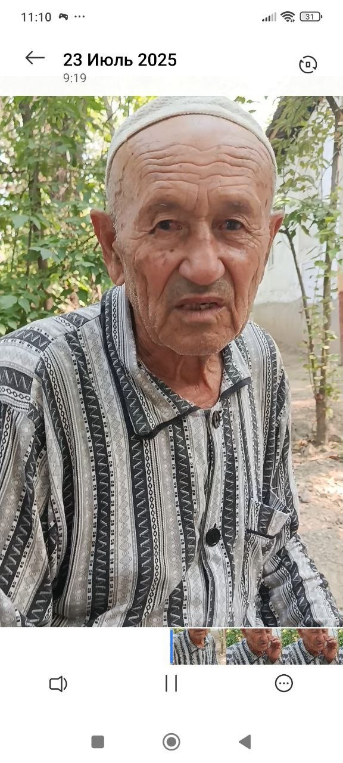
Haydarov Qo‘ldosh
O‘qituvchi, Bul. Shirmonbuloq qishlogʻi, 80 yosh(turk)
Mirzayeva Ergash
O‘qituvchi, Ara. Chekobot qishlogʻi, 81 yosh(turk)
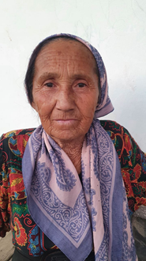
Sattorova Salomatxon
Dehqon, Mar. Qorabog‘ish qish, 67 yosh(turk)
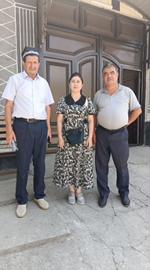
Shirmonbuloq qishlog‘i
Tojixo‘jayev Shukurulla, Anarbayeva Marifat, Umarov Murodiljon(dadam)
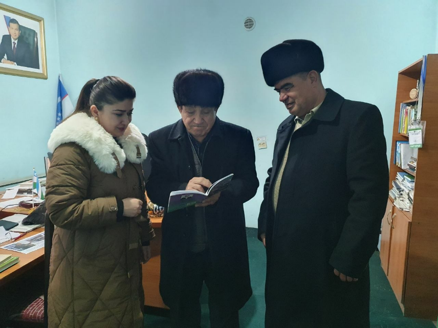
Marhamat tumani
Tarix muzeyi rahbari Xusanov Ortig‘ali domla bilan suhbat jarayoni.
Ertak
Turk-barloslar ertaklari.
Video tanlang
Topishmoq
Topishmoqlar va hazilomuz she'rlar.
Maqol
Turk-barlos maqollari va ularning izohi.
1. Kelin salom
Qo'shiq matni yoki tavsifi.
2. Yor-yor
Qo'shiq matni yoki tavsifi.
3. Ona
Qo'shiq matni yoki tavsifi.
Audio materiallar
Audio yozuvlar va musiqiy materiallar.
97 yosh
Ilon voqe
Qarabog‘ish
Голос 011
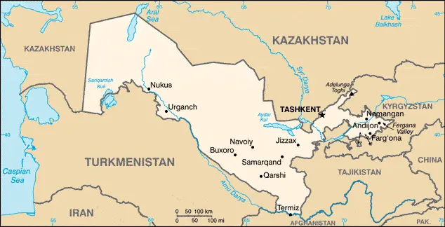
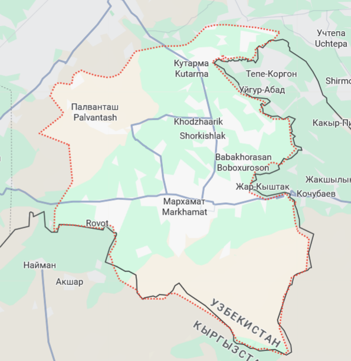
Marhamat tumani
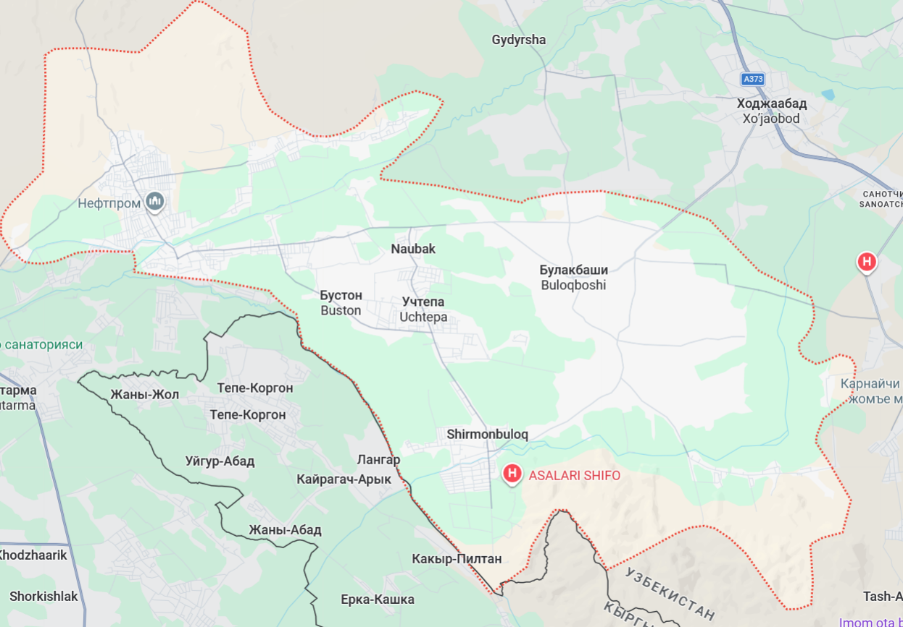
Buloqboshi tumani
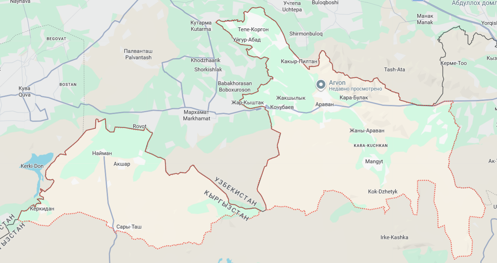